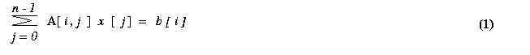

hyPACK-2013 : OpenCL Prog. on Intel Xeon Coprocessor
Intel Xeon Host and Xeon Phi Coprocessor Software harnesses
the tremendous processing power of many-core processors for high-performance,
data-parallel computing in a wide range of applications.
The OpenCL enviornment on Intel Xeon Phi provides complete heterogeneous
OpenCL development platform for both the CPU and MIC.
Intel Xeon Phi OpenCL software development platform is available for x86-based CPUs
MIC programming environment and it provides complete heterogeneous
OpenCL development platform for both Xeon X86 host and Intel Xeon-Phi Coprocessor
(x86 SMP Chip many core processors).
Please refer to Intel Xeon Phi Coprocessor technical documents to understand OpenCL.
The techncial contents are developed using several technical reports, & Books and other
web sites of Intel as given in the References.
|
List of Programs
The
CLinfo
program uses the
clgetPlatformInfo()
and
clgetDeviceInfo()
commands print the detailed information about the OpenCL supported platforms and devices
in a system. Hardware details such as memory sizes and bus widts are available using these
commands. A snippet of the output from the CLinfo program is obtained using the command
$ ./CLInfo
Programs on Single device
|
Example 1.1
|
Write a OpenCL Program to compute vector vector addition using global memory
|
|
Example 1.2
|
Write a OpenCL Program to compute matrix matrix addition using global memory
|
|
Example 1.3
|
Write a OpenCL Program to perform vector - vector multiplication using global memory
|
|
Example 1.4
|
Write a OpenCL Program to compute infinity norm of a real squre matrix using global memory
|
|
Example 1.5
|
Write a OpenCL Program to compute matrix into matrix multiplication using global & local memory
|
|
Example 1.6
|
Write a OpenCL program to compute solve Ax=b Matrix System of linear equations based on
Jacobi method on Multiple Coprocessors using OpenCL.
( Assignment )
|
|
Example 1.7
|
Write a OpenCL program to compute sparse Matrix into vector multiplication
( Assignment )
|
|
Programs on Multiple Coprocessors
|
Example 1.8
|
Write a OpenCL Program to compute vector - vector multiplication on Multiple Coprocessors
|
|
Brief description of OpenCL Programs for Numerical (Matrix) Computations
|
Important Steps (Table 1.1) :
|
Steps
|
Description
|
|
1.
|
Memory allocation on host and Input data Generation
Do memory allocation on host-CPU
and fill with the single or double prcesion data.
|
|
2.
|
Set opencl execution environment :
Call the function setExeEnv which sets execution environment for opencl
which performs the following :
- Get Platform Information
- Get Coprocessor Information
- Create context for devices (Coprocessors) to be used
- Create program object.
- Build the program executable from the program source.
The function performs
(a). Discover & Initilaise the platforms;
(b). Discoer & Initialie the devices;
(c). Create a Context; and
(d). Create program object build the program executable
|
|
3.
|
Create command queue using
Using clCreateCommandQueue(*)
and associate it with the device you want to execute on.
|
|
4.
|
Create device bufffer
using
clCreateBuffer() API
that will contain the data from
the host-buffer.
|
|
5.
|
Write host-CPU data to device buffers
|
|
6.
|
Kernel Launch :
(a). Create kernel handle;
(b). Set kernel arguments;
(c). Configure work-item strcture (
Define global and local worksizes and launch kernel for execution on device-Coprocessor); and
(d). Enqueue the kernel for execution
|
|
7.
|
Read the outpur Buffer to the host (Copy result from
Device-Coprocessorcoprocessor-xeon-phi-codes to host-CPU :)
Use
clEnqueueReadBuffer() API.
|
|
8.
|
Check correctness of result on host-CPU
Perform computation on host-CPU and compare CPU and Device
(Coprocessor) results.
|
|
9.
|
Release OpenCL resources (Free the memory)
Free the memory of arrays allocated on host-CPU & device
(Coprocessor)
|
Table 1.1
Important Steps (Table 1.2) :
Kernels & OpenCL Execution Model :
|
S.No.
|
Description
|
|
1.
|
Work-item
The unit of concurrent execution in OpenCL C is a work-item.
(For example, in typical fragment of the code, i.e. for loop data computations
of typical multi-theaded code, a map of a single iteration of the loop to a
work-item can be done.)
OpenCL runtime to generate as many work-items as elements in the
input and output arrays and allow the runtime to map those work-items to
the underlying hardware (CPU & Device (Coprocessor).
(Conceptually, this is very similar to the parallelism inherent in a functional
map operation or data parallel in for loop in a model such as
OpenMP.)
|
|
2.
|
Identification of Work-item
When a OpenCL device begins executing a kernel, it provides intrinsic
functions that allow a work-item to identify itself.
This can be achieved by calling
get_global_id(0) allows the programmer to make use of position of the current
work-item in the sample case to regain the loop counter.
|
|
3.
|
Execution in fine-grained work-items
(N-dimensional range
(NDRange)
OpenCL describes execution in fine-grained workitems and
can despatch vast number of work-items on architecture
with hardware for fine-grained threading. Scalability can be achieved
due to support of large number of work-items.
When a kernel is executed, the programmer specifies the number of
work-items that should be created as an n-dimensional range
(NDRange)
An NDRange is one-, two- or three-dimensional index space of
work-items
that will often map to the dimensions of either the input or the
output data.
The dimensions of the NDRange ae specified and an N-element array
of type
size_t, where N represents the number of dimenisons used
to describe work-items being created.
|
|
4.
|
Example
Assume that 1024 elements are taken in each vector. The size can
be specified as a one- , two- , or three- dimensional
vector. The host code to specify an ND Range for 1024 elements is follows :
size_t indexSpaceSize[3] = [1024, 1,1];
Most importantly, dividing the work-items of an NDRange into
smaller, equal sized workgroups as shown in Figure 1.
An Index
space with N dimensions requires workgroups to be specified using N dimensions,
thus, a threee-dimensional requires three-dimensional workgroups.
|
|
5.
|
Example :
Perform Barrier Operations & synchronization
work-tems within a workgroup can peform barrier
operations to synchronize and they have access to a shared memory address space
Because workgroups sizes are fixed, this communication does not have
have a need to scale and hence does not affect scalability of a large
concurrent dispatch.
For example 1.3, i.e., Vector Vector Addition, the workgroup
can be specified as
size_t workGroupSize[3] = [64, 1, 1];
If the total number of work-items per array is 1024, this results
in creating 16 work-groups (1024 work-items / 64
per workgroups.
Most importantly, OpenCL requires that the index space sizes are evenely
divisible by the work-group sizes in each dimension.
For hardware efficiency, the workgroup size is usually fixed
to a favourable size, and we round up the index space size in each
dimension to satisfy this divisibility requirement.
In the kernel code, user can specify that exta work-items in
each dimension simply return immediately without outputting any data.
Many highly data paralle computations in which access of memory for
arrays that peforms computation (example Vector-Vector Addition), the
OpenCL allows the local workgroup size to be ignoed by
the programmer and generated automatically by the implementation; in this
case; the dveloper will pass NULL instead.
|
Table 1.2
- Objective
Write OpenCL program to compute addition of two vectors
- Description
We create a one-dimensional globalWorkSize array that is overlaid on vector.
The input vectors using Single Precision/Double Precision input data
are generated on Host and transfer the vectors to device for vector
addition. In global memory,a simple kernel based on the N- dimension
grid of work groups is generated in which work item is given a unique
ID within its work group. Each work item performs addition of two vectors
using work item ID and the final resultant vector is generated on device
and transferred to host.
Refer Table 1.1 for OpenCL Important implementation Steps
-
Input
Two vectors of same size
-
Output
Execution time in seconds, Gflops achieved
|
|
- Objective
Write OpenCL program to compute addition of two matrices
- Description
We create a two-dimensional globalWorkSize array that is overlaid on matrices.
The input matrices using Single Precision/Double Precision input data
are generated on Host-CPU and transfer the matrices onto device (Coprocessor) to
perform matrix
addition. In global memory,a simple kernel based on the two- dimension
indexspace of work groups is generated in which work item is given a unique
ID within its work group. Each work item performs addition of two matrices
using work item ID and the final resultant matrix is generated on device
and transferred to host.
Refer Table 1.1 for OpenCL Important implementation Steps
- Each work-item using its work item ID performs addition using one element
from each matrix.
-
The choice of work-items in the code are given as
size_t globalWorkSize[3] = [128, 128,1];
& for generalisation, refer
table 1.2
-
Input
Matrix Size
-
Output
Execution time in seconds, Gflops achieved
|
|
- Objective
Write OpenCL program to compute vector-vector multiplication
- Description
We create a one-dimensional globalWorkSize array that is overlaid on vector.
The input vectors using Single Precision/Double Precision input data are
generated on Host-CPU and transfer the vectors to device-Coprocessor for vector multiplication.
In global memory, a simple kernel based on the 1- dimension index space of work
groups is generated in which work item is given a unique ID within its
work group. Each work item performs partial multiplication of two
vectors and the final resultant value is generated on device-Coprocessor
and transferred to host-CPU.
Refer Table 1.1 for OpenCL Important implementation Steps
- Each work-item calculates its part of the multiplication and finally work-item 0 will add up all the value calculated by individual work-item.
-
The choice of work-items in the code are given as
size_t globalWorkSize[3] = [128, 1,1];
& for generalisation, refer
table 1.2
- Input
Size of Input vectors
- Output
Execution time in seconds, Gflops achieved
|
|
- Objective
Write OpenCL Program to find Infinity Norm of a matrix
- Description
We create a one-dimensional globalWorkSize array that is overlaid on matrices.
Infinity Norm of a Matrix: The row-Wise infinity norm of a matrix is defined
to be the maximum of sums of absolute values of elements in a row, over all rows.
The input matrix using Single Precision/Double Precision input data are generated
on Host and transfer the matrix to device for calculating infinity norm of
matrix. After the initial validity checks, each work-item is assigned a row
using its id and it will calculate sum of its assigned row. After all
calculations ,The work-item 0 will find out maximum sum among all sum of
all element of every row.
Refer Table 1.1 for OpenCL Important implementation Steps
- Each work-item is assigned a row
using its id and it will calculate sum of its assigned row. After all
calculations ,The thread 0 will find out maximum sum among all sum of
all element of every row.
-
The choice of work-items in the code are given as
size_t globalWorkSize[3] = [128, 1,1];
& for generalisation, refer
table 1.2
- Input
Size of the input Matrix
- Output
Execution time in seconds ,Gflops achieved
|
|
- Objective
Write a OpenCL Program to perform Matrix Matrix multiplication.
- Description
We create a two-dimensional globalWorkSize array that is overlaid on matrices. In the global memory implementation,
each work item reads one row from matrix and perform computation with one column of another matrix and compute the
corresponding element of resultant matrix. While in local memory implementation, Matrices have been divided into
work-groups of 16 x 16 sizes. One work-group loads one tile of both matrices from global memory to shared memory.
Each work-item with in work-group calculate temporal resultant in the local memory. After all work-items within work-group completed their part of computation, the work-group stores the resultant tile into the global resultant matrix.
Refer Table 1.1 & Table 1.2 for OpenCL Important implementation Steps as given above.
- Each work-item reads one row from matrix and perform computation with one column of another matrix and compute the corresponding element of resultant matrix.
-
The choice of work-items in the code are given as
size_t globalWorkSize[3] = [128, 128,1];
& for generalisation, refer
table 1.2
- Input
Matrix Size
- Output
Execution time in seconds, Gflops achieved
|
|
- Objective
Write a OpenCL program, for solving system of linear equations [A]{x} = {b} using Jacobi method
- Description
The Jacobi iterative method is one of the simplest iterative techniques to solve system of linear equations.
The ith equation of a system of linear equations [A]{x}={b} is

If all the diagonal elements of A are nonzero (or are made nonzero
by permuting the rows and columns of A), we can rewrite equation (1)

The Jacobi method starts with an initial guess x0 for
the solution vector x. This initial vector x0
is used in the right-hand side of equation (2) to arrive at the next approximation
x1 to the solution vector. The vector x1
is then used in the right hand side of equation (2), and the process continues
until a close enough approximation to the actual solution is found. A typical
iteration step in the Jacobi method is
We now express the iteration step of equation 3 in terms of residual rk.
Equation (3) can be rewritten as
Each process computes n/p values of the vector x in each iteration. These values are
gathered by all the processes and each process tests for convergence. If the values have been
computed up-to a certain accuracy the iterations are stopped otherwise the processes use
these values in the next iterations to compute a new set of values.
- Input
Input Matrix A and Initial Solution Vector x
- Output
solution of matrix system Ax = b
|
|
|
Example 1.7: |
Write a OpenCL program to perform sparse matrix into vector multiplication
(Assignment - To be discussed in Lab. Session)
|
- Objective
To write a OpenCL program on sparse matrix multiplication of size n x n and vector of size n.
-
Efficient storage format for sparse matrix
Dense matrices are stored in the computer memory by using two-dimensional arrays. For example,
a matrix with n rows and m columns, is stored using a n x m array of real numbers. However, using the same two-dimensional
array to store sparse matrices has two very important drawbacks. First, since most of the entries in the sparse matrix
are zero, this storage scheme wastes a lot of memory. Second, computations involving sparse matrices often need to operate only
on the non-zero entries of the matrix. Use of dense storage format makes it harder to locate these non-zero entries. For these
reasons sparse matrices are stored using different data structures.
The Compressed Row Storage format (CRS) is a widely used scheme for storing sparse matrices. In the CRS format, a
sparse matrix A with n rows having k non-zero entries is stored using three arrays: two integer arrays rowptr and colind,
and one array of real entries values. The array rowptr is of size n+1, and the other two arrays are each of size k. The
array colind stores the column indices of the non-zero entries in A, and the array values stores the corresponding non-zero
entries. In particular, the array colind stores the column-indices of the first row followed by the column-indices of the
second row followed by the column-indices of the third row, and so on. The array rowptr is used to determine where the storage of the
different rows starts and ends in the array colind and values. In particular, the column-indices of row i are stored starting at colind [rowptr[i]]
and ending at (but not including) colind [rowptr[i+1] ]. Similarly, the values of the non-zero entries of row i are stored at values [rowptr[i] ]
and ending at (but not including) values [rowptr[i+1] ].
Also note that the number of non-zero entries of row i is simply rowptr[i+1]-rowptr[i].
-
Serial sparse matrix vector multiplication
The following function performs a sparse matrix-vector multiplication [y]={A} {b}
where the sparse matrix A is of size n x m, the vector b is of size m and the vector
y is of size n. Note that the number of columns of A (i.e., m ) is not explicitly
specified as part of the input unless it is required.
void SerialSparseMatVec(int n, int *rowptr, int *colind, double *values
double *b, double *y)
{
int i, j, count ;
count = 0;
for(i=0; i<n; i++)
{
y[i] = 0.0;
for (j=rowptr[i]; j<rowptr[i+1]; j++)
y[i] += value [count] * b [colind[j]];
count ++;
}
}
- Description of parallel algorithm
In the parallel
implementation, each thread picks a row from the
matrix and multiplies it with the vector. Thus computation of all threads
is carried out in parallel.
-
Implementation
There are two implementations, one using OpenCL kernels and the other using BLAS library.
OpenCL implementation
Step 1: The matrix size(no. of rows) and sparsity(percentage of non-zero) are provided by the user in the cmd line.
Step 2: A sparse matrix and a vector of the given size are allocated and initialized. Also the row_ptr and
col_idx vectors are created and assigned their appropriate based on the sparse matrix
Step 3: The above vectors are also created and initialized on the device (Coprocessor).
Step 4: The sparse_matrix and vector are multiplied in the Device (Coprocessor) to obtain the result.
- Performance:
The gettimeofday() function which is part of sys/time.h is used to measure the time taken for computation.
- Input
The input to the problem is given as arguments in the command line. It should be given in the following format ;
Suppose that the number of rows of the sparse matrix is n (only square matrices are considered) and
the sparsity i.e. the percentage of number of zero's (given in the range 0 to 1) is m, then the program must be run as,
./program_name n m
CPU generates the sparse matrix, the vector to be multiplied using random values and the row_ptr and col_idx vectors based on the sparse matrix.
- Output
The CPU prints the time taken for the computation.
|
|
|
Example 1.8: |
Write a OpenCL program to compute vector-vector addition on Multi-Devices.
(Download source code - :
clMultiDevices-VectVectAdd.c
)
|
- Objective
Write OpenCL program to compute addition of two vectors
- Description
We create a one-dimensional globalWorkSize array that is overlaid on vector.
The input vectors using Single Precision/Double Precision input data
are generated on Host and transfer the vectors to device for vector
addition. Each device (Coprocessor) computes addition of its own elements of two vectors and
accumalates partial sum.
In global memory,a simple kernel based on the one- dimension
indexspace of work groups is generated in which work item is given a unique
ID within its work group. Each work item performs addition of two vectors
using work item ID and the final resultant vector is generated on device
and transferred to Host.
Refer Table 1.1 for OpenCL Important implementation Steps
- Each work-item using its work item ID performs addition using one element from each vector.
-
The choice of work-items in the code are given as
size_t globalWorkSize[3] = [128, 1,1];
& for generalisation, refer table 1.2
The number of work-items of workgroup on each Device (Coprocessor) are specified.
-
Input
Two vectors of same size
-
Output
Execution time in seconds, Gflops achieved
|
|
|
|
|
|